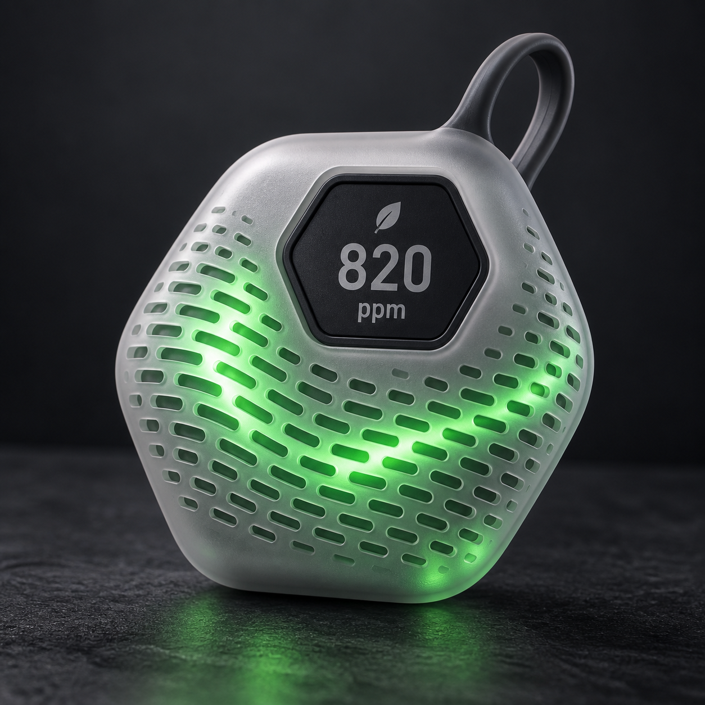
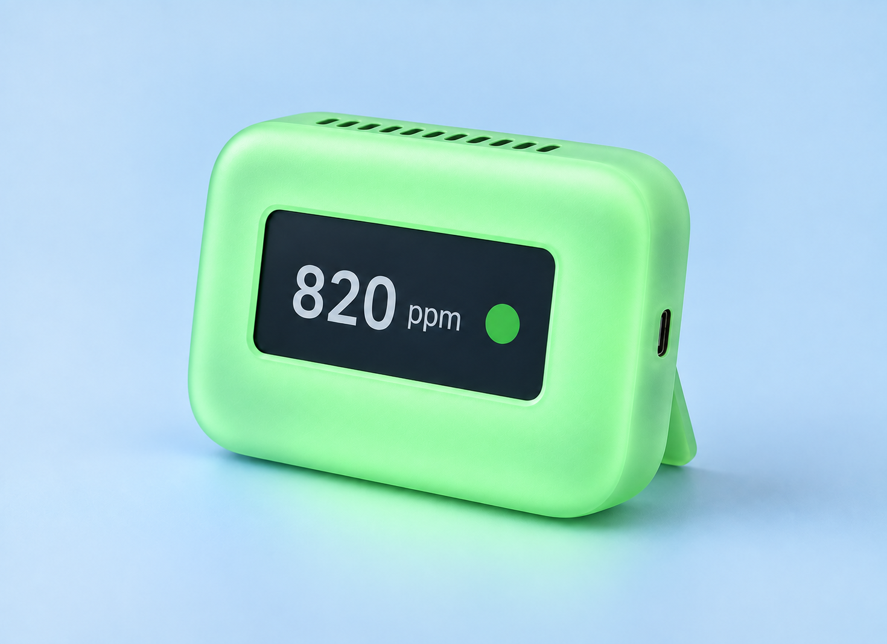
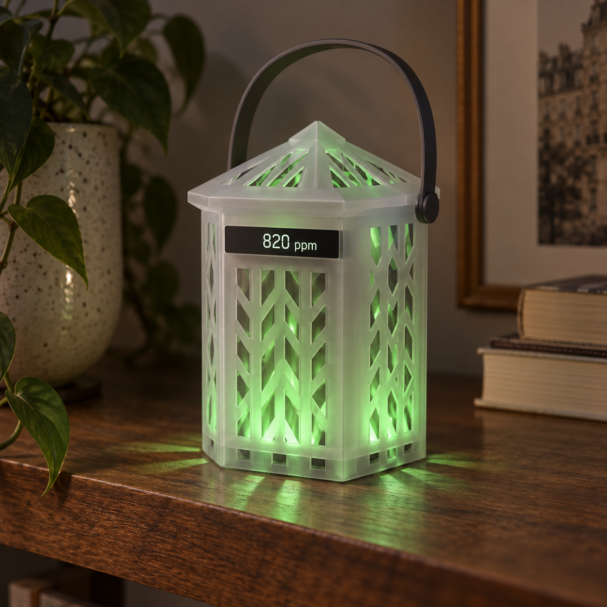
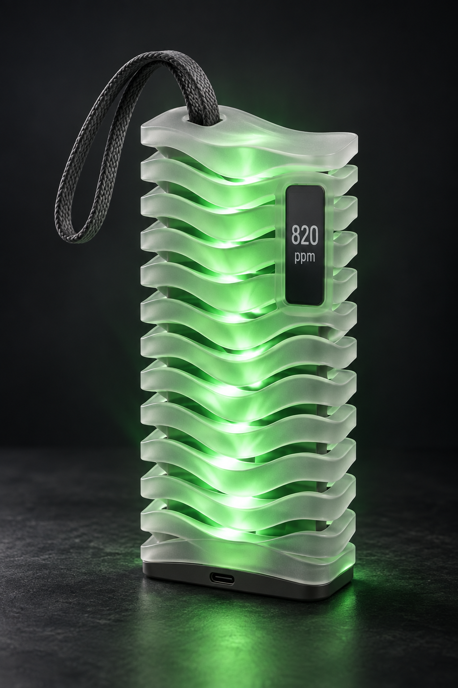
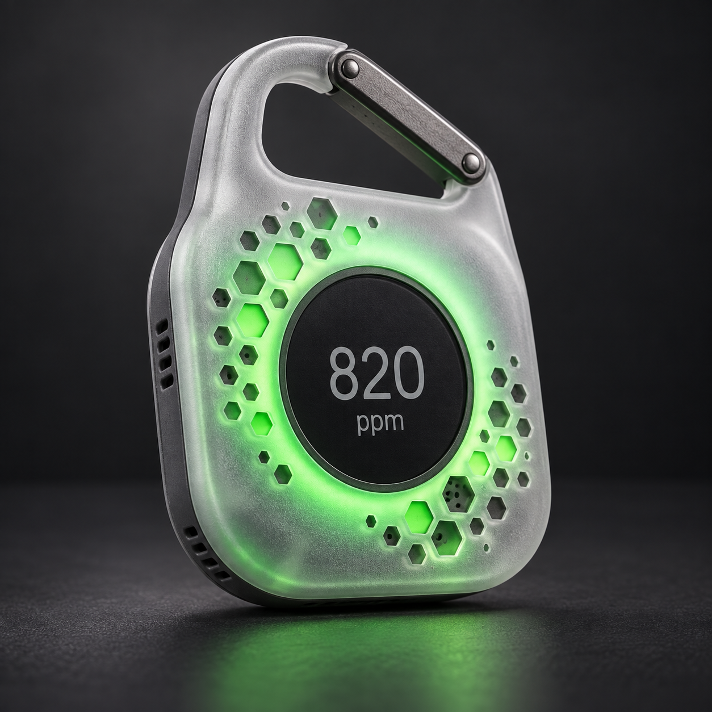

Breeze Pocket
Poche perforée 便携孔阵挂在包上或放在桌面；孔阵中的柔光波纹表现空气流动。
À suspendre ou poser ; vague lumineuse dans les perforations.
Un moniteur CO₂ utile ne mesure pas seulement l’air : il transforme une donnée invisible en une décision simple — aérer, activer la ventilation, ou attendre.
建议定义为“通风提示器”，不是泛泛的“空气质量仪”。主屏只突出 CO₂ 与绿色、琥珀色或红色行动状态；温湿度与其他数据留给次级页面或 App。
À positionner comme un « guide de ventilation », non comme un vague analyseur d’air. L’écran principal montre le CO₂ et une action verte, ambre ou rouge ; les autres données restent secondaires.
CO₂ 是室内换气不足的实用信号，但空气净化器通常不能降低 CO₂。产品必须明确提示“开窗或开新风”，避免用户采取错误动作。
Le purificateur d’air ne réduit généralement pas le CO₂ : l’action doit être « aérer » ou « activer l’air neuf ».

五个方向共同采用功能性进气孔、孔后磨砂 PC 扩散片和单一状态光色。光不是装饰贴片：它沿着孔阵、波纹或折页缓慢推进，让人感觉空气正在流动。
Les cinq pistes utilisent de vraies entrées d’air, un diffuseur PC givré derrière les ouvertures et une seule couleur d’état. La lumière avance dans les perforations, les ondulations ou les volets pour rendre le renouvellement d’air perceptible.

挂在包上或放在桌面；孔阵中的柔光波纹表现空气流动。
À suspendre ou poser ; vague lumineuse dans les perforations.

带提手的小型通风灯；光沿着格栅由下向上移动。
Petite lanterne à poignée ; lumière ascendante dans la grille.

波纹层之间即是进气口；适合书架、床头和办公室。
Les interstices servent d’entrées d’air ; pour bureau ou chevet.

包、婴儿车或衣物上的随行传感器；环形光流围绕读数。
Capteur à clipser ; halo en mouvement autour de la mesure.
何时：婴儿房、卧室、冬季不开窗。
Chambre de bébé, nuit, hiver.
需求：不打扰睡眠地判断何时短暂通风，兼顾干燥或过热。
Décider d’une courte aération sans troubler le sommeil, tout en surveillant air sec ou chaleur.
何时：下午犯困、连续专注、自习室。
Baisse d’attention, travail profond.
需求：将“发闷”变成可执行的休息与开窗提醒。
Transformer la sensation d’air lourd en rappel actionnable : pause et fenêtre.
何时：满员教室、门窗关闭的课堂。
Salles de classe pleines et fermées.
需求：远处一眼可读，便于统一安排通风，而非解读数据。
Lisible de loin pour organiser l’aération collective, sans interpréter des chiffres.
何时：会议密集、电话间、员工抱怨“很闷”。
Réunions, cabines, plaintes de confort.
需求：快速说明问题在哪一间房，并让新风按需运行。
Identifier immédiatement la salle concernée et piloter l’air neuf selon le besoin.
何时：高呼吸量、多人团课、无窗场地。
Effort physique, forte densité, local sans fenêtre.
需求：让教练在不打断课程的前提下决定开新风或减少人数。
Permettre au coach d’aérer ou d’ajuster la jauge sans interrompre le cours.
何时：高峰客流、地下餐区、多人住宿。
Heures de pointe, sous-sol, chambres partagées.
需求：保持体感与评价，不必把复杂设备展示给客人。
Préserver confort et avis clients, sans exposer un appareil complexe.
何时：过敏季、新装修、全屋新风控制。
Allergies, rénovation, ventilation domestique.
需求：将 CO₂ 放在温湿度、颗粒物与通风策略的整体判断中。
Lire le CO₂ avec température, humidité, particules et stratégie de ventilation.
| Composant 部件 | Recommandation 建议 | Stratégie économique 低成本策略 | Prix indicatif |
|---|---|---|---|
| Cœur CO₂ CO₂ 核心 | Module NDIR éprouvé avec étalonnage automatique de référence 成熟 NDIR 模组，带自动基线校准 | Pas d’estimation eCO₂ ou VOC 这是产品可信度的底线，不使用 eCO₂ 或 VOC 推算值。 | US$10–18 |
| Affichage et interaction 显示与交互 | Écran LCD monochrome ou écran segmenté de 2,13 à 2,9 pouces avec 3 LED RGB 2.13 至 2.9 吋单色 LCD 或段码屏，加 3 颗 RGB LED | Sans écran tactile ni collage verre 免触摸屏、免玻璃贴合；只保留一个轻触按键。 | US$2.7–5.4 |
| Carte électronique 主板 | MCU courant, circuit température humidité, USB C 5 V 通用 MCU、温湿度 IC、USB C 5V | Wi Fi optionnel au premier lancement 首代 Wi Fi 可选，不把电池、无线、App 都塞进基础版。 | US$3–6 |
| Coque et lumière mobile 外壳与流光 | Coque ABS deux pièces à texture fine, ouvertures locales, diffuseur PC givré 两件式细纹 ABS 外壳，局部镂空孔阵，加一片磨砂半透明 PC 扩散片 | Pas de coque entièrement transparente 薄 PC 扩散片置于孔阵后，配合白色反射片与 3 颗 RGB LED，形成流动柔光。 | US$1.5–2.7 |
| Assemblage et emballage 装配与包装 | Quatre vis autotaraudeuses ou clips, carte papier et boîte kraft 4 颗自攻螺丝或卡扣，纸卡与牛皮纸盒 | Sans colle, couvercle aimanté ni adaptateur secteur dédié 不使用胶水、磁吸盖、专属电源适配器。 | US$1.5–3 |
| BOM cible 目标 BOM | Version USB essentielle CO₂ NDIR, température, humidité, écran, 3 LED RGB et diffuseur local. Hors transport, certification, distribution et taxes. 基础 USB 版：CO₂、温湿度、屏幕、3 颗 RGB LED、局部扩散片；不含运输、认证、渠道及税费。 | US$17–32 | |
以下按含包装不超过 500 g的一台设备计算，使用 2026 年公开零售资费；发货人如有企业合约，价格可能更低。
Base de calcul : un appareil emballé de 500 g maximum, tarifs publics 2026. Un contrat professionnel peut réduire ces montants.
| 目的地 | 建议方式 | 公开寄费 | 预计时效 |
|---|---|---|---|
| 巴黎及法兰西岛的急件 Paris et Île-de-France urgent | Chrono Relais 13，到自提点 relais Pickup | 10,80 € TTC | 下一个工作日中午前 lendemain avant 13 h |
| 法国本土，价格优先 France métropolitaine, prix | Mondial Relay，自提点或储物柜 Point Relais ou Locker | 4,15 € TTC | 3–5 个工作日 3 à 5 jours ouvrés |
| 法国本土，送货上门 France métropolitaine, domicile | Colissimo domicile，含追踪 suivi inclus | 7,59 € TTC | 1–2 个工作日 24 à 48 h ouvrables |
| 科西嘉岛 Corse | Colissimo domicile；使用本土资费 tarif métropole | 7,59 € TTC | 约 2–3 个工作日，非承诺时效 environ 2 à 3 jours, sans garantie |
| 海外省区 OM 1 Guadeloupe, Martinique, Guyane, Réunion, Mayotte et assimilés | Colissimo Outre-mer 标准 Colissimo Outre-mer | 12,02 € TTC | 6–18 天 6 à 18 jours |
Valider dimensions, cheminement d’air, lisibilité de l’écran et angle du support. Le nylon SLS convient aux essais fonctionnels, le SLA à l’aspect visuel. Ne pas prendre la finition 3D imprimée pour une finition de série. 验证尺寸、进气路径、屏幕可读性与支架角度。SLS 尼龙适合功能测试，SLA 仅适合外观。不要把 3D 打印表面当量产外观标准。
Le moulage PU convient à 50 à 500 unités. Entre 1 000 et 10 000 unités, privilégier un moule aluminium à une empreinte, rapide à modifier et adapté à la validation du marché. 50 至 500 台可用 PU 复模。约 1 000 至 10 000 台优先单腔铝模，开模快、改版成本低，适合验证市场。
Prévoir un moule ABS à deux plaques pour la face avant et un autre pour le dos. Aligner les perforations avec le démoulage pour éviter les tiroirs latéraux. Le diffuseur est une petite pièce PC moulée, ou une pièce PC découpée au laser au premier lot. 前壳与背壳各用一副两板 ABS 模。孔阵沿开模方向排布，避免侧抽芯。扩散片采用小尺寸 PC 模件，或首批激光切割 PC 片。
Coque : ABS mat teinté dans la masse, 1,8 à 2,0 mm 外壳：本色细纹 ABS，厚度 1.8 至 2.0 mm。这是最便宜、耐摔并且能直接出模的可见结构；只在前面、侧面或提手区域做通孔图案。
L’ABS est l’enveloppe économique et résistante. Les perforations sont limitées aux zones visibles de lumière et d’entrée d’air.
Effet lumineux : une fine plaque PC givrée de 0,8 à 1,0 mm derrière les perforations 流光效果：孔阵背后的 0.8 至 1.0 mm 磨砂 PC 薄片。它不是整壳透光；一片平整的小扩散件就能把少量 LED 的光拉开、柔化，并产生图中“光从孔中流出”的效果。
Ce n’est pas une coque entièrement transparente. Une petite plaque diffuseuse plane étale et adoucit la lumière de quelques LED.
Optique : film PET blanc réfléchissant, masque noir interne, trois LED RGB 光学结构：白色 PET 反射片、内部黑色遮光片、3 颗 RGB LED。反射片提高均匀度；遮光片防止显示屏漏光；3 颗 LED 已足以形成缓慢移动的单色波纹。
Le réflecteur améliore l’uniformité, le masque protège l’écran, et trois LED suffisent pour une vague lente de couleur unique.
Patins : silicone ou TPE découpé standard 脚垫：标准冲切硅胶或 TPE。不为脚垫再开模，以背胶件完成防滑与减振。
Pas de moule dédié pour les patins.
壁厚统一 1.8 至 2.2 mm；拔模角至少 1.5°；孔阵按开模方向布置，孔的长宽比不过激；螺丝柱用筋加强，进气孔远离 MCU 热源。
Épaisseur 1,8 à 2,2 mm, dépouille d’au moins 1,5°, perforations dans le sens de démoulage, nervures autour des bossages et prises d’air loin du MCU.
首代避免：整壳透明 PC、双色共注、喷漆、电镀、超声焊死外壳、复杂活页支架。要把预算放在一片磨砂扩散片、反射片和软件渐变控制，而不是用更多 LED。
À éviter au premier lancement : PC transparent intégral, bi-injection, peinture, galvanisation, soudure ultrasonique et charnière complexe. Investir dans un diffuseur, un réflecteur et le pilotage logiciel, pas dans davantage de LED.